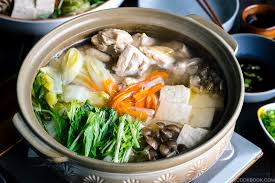

Mizutaki
Traditional Japanese Chicken Stew
Mizutaki is a comforting Japanese chicken stew, slowly cooked with fresh vegetables and a light dashi broth. Traditionally enjoyed with dipping sauces, this dish is warm, flavorful, and perfect for sharing with family and friends.
At Yoko's Kitchen, we guide you step-by-step through selecting the freshest ingredients, preparing the chicken,
and simmering the stew to perfection. Learn how to balance flavors so that every bite is tender, juicy, and rich in umami.
You can also add seasonal vegetables, mushrooms, or tofu for extra texture and nutrition. Serving tips include creating small dipping sauces for a personalized dining experience, just like in Japan.
Join our workshops to master Mizutaki and discover the art of Japanese comfort food. Perfect for cold evenings, family gatherings, or special occasions, this stew brings warmth and flavor to any meal.